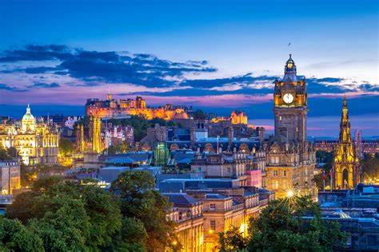
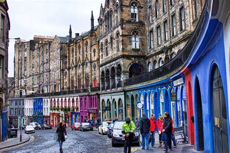
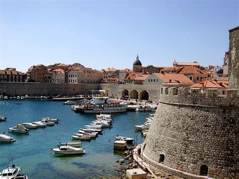
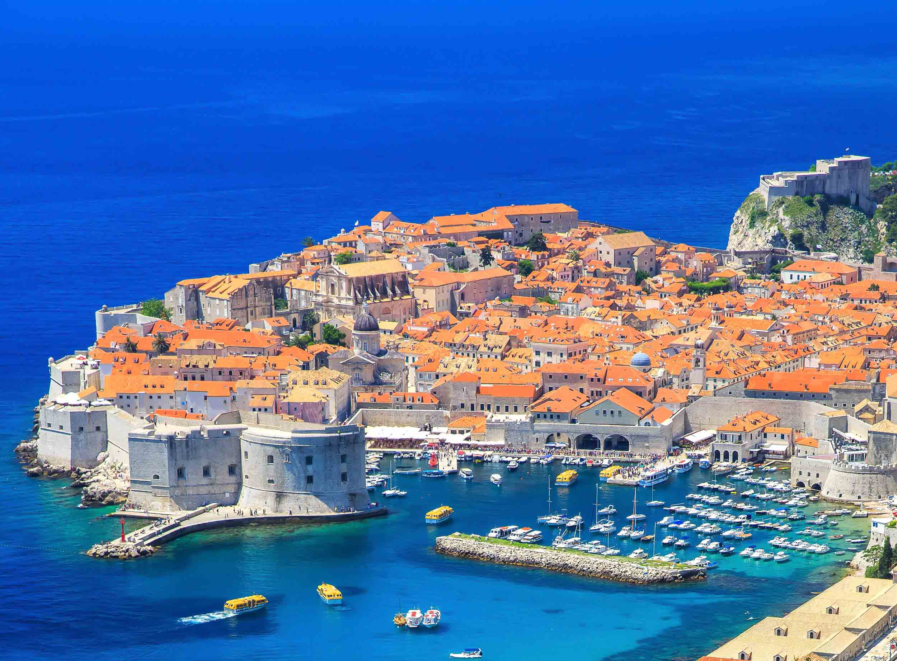
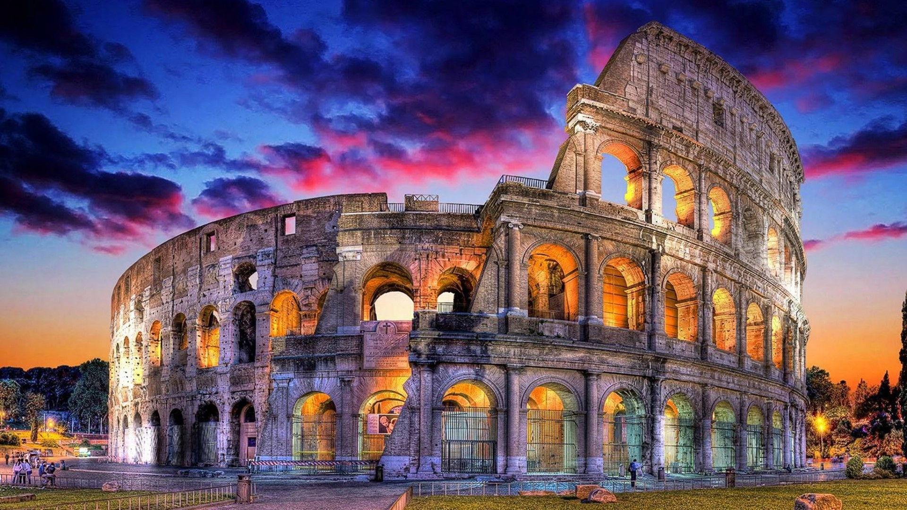

- Edimburgo
Edimburgo – cuyo nombre en inglés se escribe Edinburgh – es la capital de Escocia y segunda ciudad más grande del país, después de Glasgow. ¿Tu próximo destino es Edimburgo?


- Dubrovnik
Dubrovnik es conocida por su caracteristica antigua, rodeada de enormes murallas de piedra que te van a enamorar. Esta ciudad del sur de Croacia, frente al mar adriatico, el cual te va a obligar a bañarte todos los dias si vas en verano. Conoce mas sobre esta hermosa ciudad, una de mis preferidas


- Roma
Tantas palabras para esta gran capital, y tan pocas para poder describir lo linda que es. Roma, la bella Roma, la ciudad que si conoces vas a querer ir una y otra vez.
